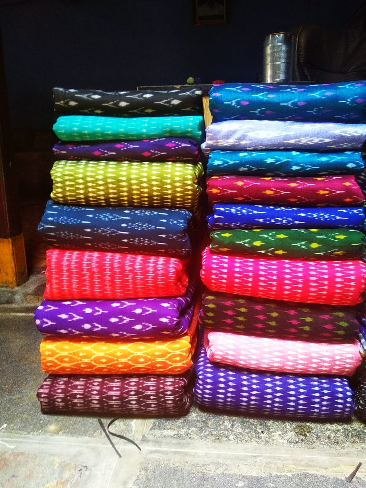

Blue Patterned Cotton
Soft Pochampally cotton fabric with blue motifs.

Red Traditional Design
Handwoven red ikkat design on soft cotton fabric.

Yellow Zigzag Cotton
Bright yellow zigzag pattern, ideal for kurtas or blouses.